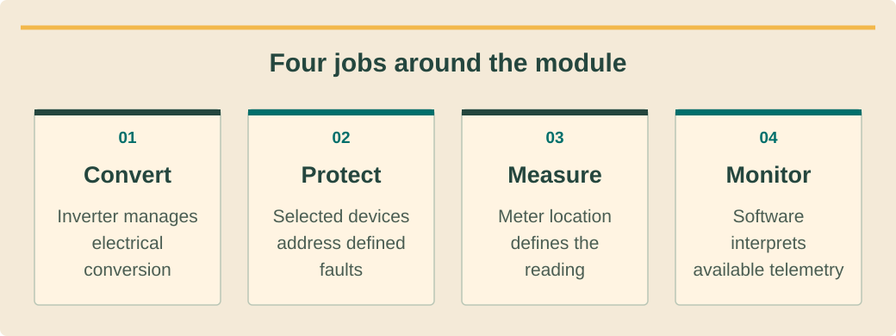

Inverters & Components
ממירים ורכיבי מערכת
อินเวอร์เตอร์และอุปกรณ์ประกอบ
String Inverters
ממירי סטרינג
สตริงอินเวอร์เตอร์
A string inverter is the most common type of inverter in commercial and industrial solar installations. Solar panels are wired together in series to form a "string," and the combined DC output of the entire string is fed into a single inverter that converts it to AC electricity.
ממיר סטרינג הוא סוג הממיר הנפוץ ביותר בהתקנות סולאריות מסחריות ותעשייתיות. פאנלים סולאריים מחוברים יחד בטור ויוצרים "סטרינג", והתפוקה המשולבת של DC מכל הסטרינג מוזנת לממיר בודד שממיר אותה לחשמל AC.
สตริงอินเวอร์เตอร์ เป็นอินเวอร์เตอร์ชนิดที่พบมากที่สุดในการติดตั้งโซลาร์เชิงพาณิชย์และอุตสาหกรรม แผงโซลาร์เซลล์ถูกต่อสายเข้าด้วยกันแบบอนุกรมเพื่อสร้าง "สตริง" และเอาต์พุต DC รวมของทั้งสตริงจะถูกป้อนเข้าอินเวอร์เตอร์ตัวเดียวที่แปลงเป็นไฟฟ้า AC
Bustan Energy primarily uses Huawei SUN2000 series string inverters, which are the world's #1 selling inverter brand. The lineup includes:
Bustan Energy משתמשת בעיקר בממירי סטרינג מסדרת Huawei SUN2000, שהיא מותג הממירים הנמכר ביותר בעולם. הסדרה כוללת:
Bustan Energy ใช้ สตริงอินเวอร์เตอร์ซีรีส์ Huawei SUN2000 เป็นหลัก ซึ่งเป็นแบรนด์อินเวอร์เตอร์ขายดีอันดับ 1 ของโลก ซีรีส์นี้ประกอบด้วย:
- SUN2000-5KTL — 5 kW, residential, single-phase, 2 MPPTs
- SUN2000-10KTL — 10 kW, large residential / small commercial, single-phase, 2 MPPTs
- SUN2000-25KTL — 25 kW, commercial rooftop, three-phase, 4 MPPTs
- SUN2000-50KTL — 50 kW, medium commercial, three-phase, 6 MPPTs
- SUN2000-100KTL — 100 kW, industrial / large commercial, three-phase, 10 MPPTs
- SUN2000-5KTL — 5 קילווואט, מגורים, חד-פאזי, 2 MPPTs
- SUN2000-10KTL — 10 קילווואט, מגורים גדול / מסחרי קטן, חד-פאזי, 2 MPPTs
- SUN2000-25KTL — 25 קילווואט, מסחרי על גג, תלת-פאזי, 4 MPPTs
- SUN2000-50KTL — 50 קילווואט, מסחרי בינוני, תלת-פאזי, 6 MPPTs
- SUN2000-100KTL — 100 קילווואט, תעשייתי / מסחרי גדול, תלת-פאזי, 10 MPPTs
- SUN2000-5KTL — 5 kW สำหรับที่อยู่อาศัย เฟสเดียว 2 MPPTs
- SUN2000-10KTL — 10 kW ที่อยู่อาศัยขนาดใหญ่ / พาณิชย์ขนาดเล็ก เฟสเดียว 2 MPPTs
- SUN2000-25KTL — 25 kW พาณิชย์บนหลังคา สามเฟส 4 MPPTs
- SUN2000-50KTL — 50 kW พาณิชย์ขนาดกลาง สามเฟส 6 MPPTs
- SUN2000-100KTL — 100 kW อุตสาหกรรม / พาณิชย์ขนาดใหญ่ สามเฟส 10 MPPTs
MPPT (Maximum Power Point Tracking)MPPT (מעקב נקודת הספק מרבי)MPPT (การติดตามจุดกำลังสูงสุด) — An algorithm that continuously adjusts the inverter's operating voltage to extract the maximum possible power from each string of panels, even as conditions change throughout the day.אלגוריתם שמכוונן ברציפות את מתח הפעולה של הממיר כדי לחלץ את ההספק המרבי האפשרי מכל סטרינג של פאנלים, גם כשהתנאים משתנים לאורך היום.อัลกอริทึมที่ปรับแรงดันไฟฟ้าการทำงานของอินเวอร์เตอร์อย่างต่อเนื่องเพื่อดึงกำลังไฟฟ้าสูงสุดที่เป็นไปได้จากแต่ละสตริงของแผง แม้สภาพแวดล้อมจะเปลี่ยนแปลงตลอดวัน
See the ideaרואים את הרעיוןมองเห็นแนวคิด
Four jobs around the moduleארבעה תפקידים סביב הפאנלสี่หน้าที่รอบแผง

Read the diagram as textקריאת התרשים כטקסטอ่านแผนภาพเป็นข้อความ
- Convertממיריםแปลง — Inverter manages electrical conversionהממיר מנהל המרה חשמליתอินเวอร์เตอร์จัดการแปลงไฟ
- Protectמגניםป้องกัน — Selected devices address defined faultsציוד שנבחר מטפל בתקלות מוגדרותอุปกรณ์ที่เลือกจัดการความขัดข้องระบุ
- Measureמודדיםวัด — Meter location defines the readingמיקום המונה מגדיר את המדידהตำแหน่งมิเตอร์กำหนดสิ่งที่วัด
- Monitorמנטריםติดตาม — Software interprets available telemetryהתוכנה מפרשת טלמטריה זמינהซอฟต์แวร์แปลข้อมูลที่ได้รับ
Micro-Inverters vs String vs Central Inverters
מיקרו-ממירים מול סטרינג מול ממירים מרכזיים
ไมโครอินเวอร์เตอร์ vs สตริง vs เซ็นทรัลอินเวอร์เตอร์
There are three main inverter architectures used in solar systems. Each has trade-offs in cost, performance, and complexity:
ישנם שלושה סוגי ארכיטקטורות ממיר עיקריים במערכות סולאריות. לכל אחד יתרונות וחסרונות בעלות, ביצועים ומורכבות:
มีสถาปัตยกรรมอินเวอร์เตอร์หลัก 3 แบบที่ใช้ในระบบโซลาร์ แต่ละแบบมีข้อดีข้อเสียด้านต้นทุน ประสิทธิภาพ และความซับซ้อน:
1. String Inverters — One inverter handles an entire string of panels (typically 8–25 panels per string). Cost-effective for uniform roofs without shading. If one panel underperforms, the entire string output drops ("Christmas lights effect"). This is what Bustan Energy uses for most projects.
1. ממירי סטרינג — ממיר אחד מטפל בכל הסטרינג (בדרך כלל 8–25 פאנלים לסטרינג). חסכוני עבור גגות אחידים ללא הצללה. אם פאנל אחד מתפקד פחות, תפוקת כל הסטרינג יורדת ("אפקט שרשרת האורות"). זה מה ש-Bustan Energy משתמשת ברוב הפרויקטים.
1. สตริงอินเวอร์เตอร์ — อินเวอร์เตอร์ตัวเดียวจัดการทั้งสตริงของแผง (โดยทั่วไป 8–25 แผงต่อสตริง) คุ้มค่าสำหรับหลังคาสม่ำเสมอที่ไม่มีเงา ถ้าแผงหนึ่งทำงานต่ำ เอาต์พุตของทั้งสตริงจะลดลง ("เอฟเฟกต์สายไฟคริสต์มาส") นี่คือสิ่งที่ Bustan Energy ใช้สำหรับโปรเจกต์ส่วนใหญ่
2. Micro-Inverters — A small inverter is attached directly to each panel. DC-to-AC conversion happens at the panel level, so each panel operates independently. Best for complex roofs with multiple orientations or shading. Higher cost per watt but maximizes production per panel. Brands: Enphase, APsystems.
2. מיקרו-ממירים — ממיר קטן מחובר ישירות לכל פאנל. המרת DC ל-AC מתרחשת ברמת הפאנל, כך שכל פאנל פועל באופן עצמאי. הכי מתאים לגגות מורכבים עם כיוונים מרובים או הצללה. עלות גבוהה יותר לוואט אך ממקסמת ייצור לכל פאנל. מותגים: Enphase, APsystems.
2. ไมโครอินเวอร์เตอร์ — อินเวอร์เตอร์ขนาดเล็กติดตั้งโดยตรงกับแต่ละแผง การแปลง DC เป็น AC เกิดขึ้นที่ระดับแผง ดังนั้นแต่ละแผงทำงานอิสระ เหมาะที่สุดสำหรับหลังคาซับซ้อนที่มีทิศทางหลายทิศหรือมีเงา ต้นทุนสูงกว่าต่อวัตต์แต่เพิ่มการผลิตสูงสุดต่อแผง แบรนด์: Enphase, APsystems
3. Central Inverters — Large-scale inverters (250 kW – 5 MW+) used in utility-scale solar farms. Multiple strings feed into a single massive inverter. Lowest cost per watt but requires uniform, unshaded ground-mount installations. Not common for rooftop projects.
3. ממירים מרכזיים — ממירים בקנה מידה גדול (250 קילווואט – 5 מגה-וואט+) המשמשים בחוות סולאריות. מספר סטרינגים מוזנים לממיר ענק יחיד. העלות הנמוכה ביותר לוואט אך דורש התקנות קרקעיות אחידות ללא הצללה. לא נפוץ בפרויקטים על גגות.
3. เซ็นทรัลอินเวอร์เตอร์ — อินเวอร์เตอร์ขนาดใหญ่ (250 kW – 5 MW+) ใช้ในโซลาร์ฟาร์มขนาดใหญ่ หลายสตริงป้อนเข้าอินเวอร์เตอร์ขนาดใหญ่ตัวเดียว ต้นทุนต่ำที่สุดต่อวัตต์แต่ต้องการการติดตั้งบนพื้นดินที่สม่ำเสมอไม่มีเงา ไม่ค่อยพบในโปรเจกต์บนหลังคา
Power Optimizers
אופטימייזרים
เพาเวอร์ออปติไมเซอร์
Power optimizers are DC-to-DC converters installed behind each solar panel. They work with a string inverter to provide panel-level optimization — similar to micro-inverters but without converting to AC at the panel. Each optimizer performs its own MPPT, ensuring that one shaded or dirty panel doesn't drag down the entire string.
אופטימייזרים הם ממירי DC-to-DC המותקנים מאחורי כל פאנל סולארי. הם עובדים עם ממיר סטרינג ומספקים אופטימיזציה ברמת הפאנל — דומה למיקרו-ממירים אך ללא המרה ל-AC בפאנל. כל אופטימייזר מבצע MPPT משלו, ומבטיח שפאנל מוצל או מלוכלך אחד לא יגרור למטה את כל הסטרינג.
เพาเวอร์ออปติไมเซอร์ คือตัวแปลง DC-to-DC ที่ติดตั้งด้านหลังแผงโซลาร์แต่ละแผง ทำงานร่วมกับสตริงอินเวอร์เตอร์เพื่อให้การเพิ่มประสิทธิภาพระดับแผง — คล้ายกับไมโครอินเวอร์เตอร์แต่ไม่ได้แปลงเป็น AC ที่แผง ออปติไมเซอร์แต่ละตัวทำ MPPT ของตัวเอง ทำให้แผงที่ถูกบังเงาหรือสกปรกแผงเดียวไม่ทำให้ทั้งสตริงลดประสิทธิภาพ
SolarEdge is the best-known optimizer brand, while Huawei also offers optimizers compatible with the SUN2000 series. Optimizers add cost but are valuable when partial shading is unavoidable — such as rooftops near tall buildings, trees, or chimneys.
SolarEdge הוא מותג האופטימייזרים המוכר ביותר, ו-Huawei גם מציעה אופטימייזרים תואמים לסדרת SUN2000. אופטימייזרים מוסיפים עלות אך בעלי ערך כאשר הצללה חלקית בלתי נמנעת — כגון גגות ליד בניינים גבוהים, עצים או ארובות.
SolarEdge เป็นแบรนด์ออปติไมเซอร์ที่รู้จักมากที่สุด ในขณะที่ Huawei ก็มีออปติไมเซอร์ที่เข้ากันได้กับซีรีส์ SUN2000 ออปติไมเซอร์เพิ่มต้นทุนแต่มีค่าเมื่อเงาบางส่วนหลีกเลี่ยงไม่ได้ — เช่น หลังคาใกล้ตึกสูง ต้นไม้ หรือปล่องไฟ
Combiner Boxes, DC & AC Disconnects
קופסאות שילוב, מנתקי DC ו-AC
คอมไบเนอร์บ็อกซ์ สวิตช์ตัด DC และ AC
Beyond the inverter, a solar system includes several important balance-of-system (BOS) components:
מעבר לממיר, מערכת סולארית כוללת מספר רכיבים חשובים נוספים (BOS — Balance of System):
นอกเหนือจากอินเวอร์เตอร์ ระบบโซลาร์ยังประกอบด้วยส่วนประกอบ BOS (Balance of System) ที่สำคัญหลายอย่าง:
Combiner Box — In larger systems, multiple panel strings are combined into a single DC feed before entering the inverter. A combiner box houses fuses or circuit breakers for each string, providing overcurrent protection and a convenient point for disconnecting individual strings during maintenance.
קופסת שילוב (Combiner Box) — במערכות גדולות, מספר סטרינגים משולבים להזנת DC אחת לפני הכניסה לממיר. קופסת השילוב מכילה נתיכים או מפסקים לכל סטרינג, מספקת הגנה מפני זרם יתר ונקודה נוחה לניתוק סטרינגים בודדים בזמן תחזוקה.
คอมไบเนอร์บ็อกซ์ — ในระบบขนาดใหญ่ หลายสตริงของแผงจะถูกรวมเป็นการป้อน DC เดียวก่อนเข้าอินเวอร์เตอร์ คอมไบเนอร์บ็อกซ์มีฟิวส์หรือเซอร์กิตเบรกเกอร์สำหรับแต่ละสตริง ให้การป้องกันกระแสเกิน และเป็นจุดที่สะดวกในการตัดการเชื่อมต่อสตริงแต่ละสตริงระหว่างการบำรุงรักษา
DC Disconnect — A switch installed between the solar array and the inverter that allows you to safely isolate the DC side for maintenance or emergencies. Required by most electrical codes.
מנתק DC — מפסק המותקן בין מערך הפאנלים לממיר שמאפשר לבודד בבטחה את צד ה-DC לתחזוקה או חירום. נדרש על ידי רוב תקני החשמל.
สวิตช์ตัด DC — สวิตช์ที่ติดตั้งระหว่างอาร์เรย์โซลาร์และอินเวอร์เตอร์ ช่วยให้สามารถแยกฝั่ง DC ออกได้อย่างปลอดภัยสำหรับการบำรุงรักษาหรือเหตุฉุกเฉิน กฎหมายไฟฟ้าส่วนใหญ่กำหนดให้ต้องมี
AC Disconnect — A switch on the AC output side of the inverter, between the inverter and the electrical panel/grid. It allows utility workers to safely disconnect the solar system from the grid.
מנתק AC — מפסק בצד פלט ה-AC של הממיר, בין הממיר ללוח החשמל/רשת. הוא מאפשר לעובדי חברת החשמל לנתק בבטחה את המערכת הסולארית מהרשת.
สวิตช์ตัด AC — สวิตช์ที่ด้านเอาต์พุต AC ของอินเวอร์เตอร์ ระหว่างอินเวอร์เตอร์กับตู้ไฟ/สายส่ง ช่วยให้เจ้าหน้าที่การไฟฟ้าสามารถตัดการเชื่อมต่อระบบโซลาร์จากสายส่งได้อย่างปลอดภัย
Balance of System (BOS)רכיבי מערכת נלווים (BOS)ส่วนประกอบระบบเสริม (BOS) — All components of a solar system besides the panels and inverter: wiring, mounting, combiner boxes, disconnects, meters, and protection devices. BOS typically accounts for 30–40% of total system cost.כל רכיבי המערכת הסולארית מלבד הפאנלים והממיר: חיווט, מערכת הרכבה, קופסאות שילוב, מנתקים, מונים ומכשירי הגנה. BOS מהווה בדרך כלל 30–40% מעלות המערכת הכוללת.ส่วนประกอบทั้งหมดของระบบโซลาร์นอกเหนือจากแผงและอินเวอร์เตอร์: สายไฟ ระบบยึด คอมไบเนอร์บ็อกซ์ สวิตช์ตัด มิเตอร์ และอุปกรณ์ป้องกัน BOS โดยทั่วไปคิดเป็น 30–40% ของต้นทุนระบบทั้งหมด
Monitoring: FusionSolar Platform
ניטור: פלטפורמת FusionSolar
การตรวจสอบ: แพลตฟอร์ม FusionSolar
Every Huawei inverter connects to the FusionSolar cloud monitoring platform. This gives system owners and operators real-time visibility into system performance. The FusionSolar app and web portal allow you to:
כל ממיר של Huawei מתחבר לפלטפורמת הניטור בענן FusionSolar. זה נותן לבעלי המערכת ולמפעילים נראות בזמן אמת לביצועי המערכת. אפליקציית FusionSolar ופורטל האינטרנט מאפשרים:
อินเวอร์เตอร์ Huawei ทุกตัวเชื่อมต่อกับแพลตฟอร์มตรวจสอบบนคลาวด์ FusionSolar ซึ่งให้เจ้าของระบบและผู้ดูแลระบบเห็นประสิทธิภาพของระบบแบบเรียลไทม์ แอป FusionSolar และเว็บพอร์ทัลช่วยให้คุณ:
- Monitor real-time power output (kW) and daily energy yield (kWh)
- View historical data — daily, monthly, yearly production graphs
- Receive alarm notifications for faults, grid failures, or underperformance
- Track string-level performance to identify individual panel issues
- Monitor inverter health — temperature, efficiency, error codes
- Manage multiple plants from a single dashboard (ideal for O&M companies)
- ניטור תפוקת הספק בזמן אמת (kW) ותשואת אנרגיה יומית (kWh)
- צפייה בנתונים היסטוריים — גרפי ייצור יומיים, חודשיים, שנתיים
- קבלת התראות על תקלות, נפילות רשת או ביצועים נמוכים
- מעקב אחר ביצועי סטרינג לזיהוי בעיות בפאנלים בודדים
- ניטור תקינות הממיר — טמפרטורה, יעילות, קודי שגיאה
- ניהול מספר מתקנים מלוח בקרה אחד (אידיאלי לחברות O&M)
- ตรวจสอบกำลังผลิตแบบเรียลไทม์ (kW) และพลังงานที่ผลิตได้ต่อวัน (kWh)
- ดูข้อมูลย้อนหลัง — กราฟการผลิตรายวัน รายเดือน รายปี
- รับการแจ้งเตือนเมื่อเกิดความผิดปกติ ไฟดับ หรือประสิทธิภาพต่ำ
- ติดตามประสิทธิภาพระดับสตริงเพื่อระบุปัญหาของแผงแต่ละแผง
- ตรวจสอบสุขภาพอินเวอร์เตอร์ — อุณหภูมิ ประสิทธิภาพ รหัสข้อผิดพลาด
- จัดการหลายโรงไฟฟ้าจากแดชบอร์ดเดียว (เหมาะสำหรับบริษัท O&M)
FusionSolar can detect a single underperforming panel within a 500-panel array in minutes. This makes troubleshooting far faster than manual inspection — a huge advantage for large commercial and industrial installations.
FusionSolar יכולה לזהות פאנל אחד בעל ביצועים נמוכים בתוך מערך של 500 פאנלים תוך דקות. זה הופך את איתור התקלות למהיר הרבה יותר מבדיקה ידנית — יתרון ענק עבור התקנות מסחריות ותעשייתיות גדולות.
FusionSolar สามารถตรวจจับแผงที่มีประสิทธิภาพต่ำแผงเดียวในอาร์เรย์ 500 แผงได้ภายในไม่กี่นาที ทำให้การแก้ปัญหาเร็วกว่าการตรวจสอบด้วยตนเองมาก — ข้อได้เปรียบอย่างมากสำหรับการติดตั้งเชิงพาณิชย์และอุตสาหกรรมขนาดใหญ่
Huawei SUN2000 Installation
התקנת Huawei SUN2000
การติดตั้ง Huawei SUN2000
Watch this video guide for a walkthrough of the Huawei SUN2000 inverter installation process, including mounting, wiring, and initial configuration:
צפו במדריך וידאו זה להדרכה על תהליך התקנת ממיר Huawei SUN2000, כולל הרכבה, חיווט והגדרה ראשונית:
ชมวิดีโอแนะนำขั้นตอนการติดตั้งอินเวอร์เตอร์ Huawei SUN2000 รวมถึงการติดตั้ง การเดินสาย และการตั้งค่าเบื้องต้น:
Watch and applyצופים ומיישמיםดูแล้วนำไปใช้
A professional demonstrationהדגמה מקצועיתการสาธิตจากผู้เชี่ยวชาญ
Before pressing playלפני שמפעיליםก่อนกดเล่น
Identify which displayed values come from meters or devices, and which are calculated summaries.זהו אילו ערכים מגיעים ממונים או מציוד ואילו הם סיכומים מחושבים.แยกค่าที่มาจากมิเตอร์หรืออุปกรณ์กับค่าที่คำนวณสรุป
New Victron Remote Management Dashboard released
Victron’s English dashboard introduction, embedded in its current VRM manual. The demonstrated interface may differ from today’s version; monitoring displays are evidence, not electrical acceptance tests.מבוא ללוח ניטור באנגלית של Victron המשולב במדריך VRM הנוכחי. הממשק עשוי להשתנות; תצוגת ניטור היא ראיה ולא בדיקת קבלה חשמלית.Victron แนะนำแดชบอร์ดภาษาอังกฤษที่ฝังในคู่มือ VRM ปัจจุบัน หน้าตาอาจต่างจากรุ่นวันนี้ ข้อมูลติดตามเป็นหลักฐาน ไม่ใช่ทดสอบรับไฟฟ้า.
Connect it to this lessonמחברים לחומר בשיעורเชื่อมกับบทเรียนนี้
VRM demonstrates one manufacturer’s monitoring interface. Apply the measurement questions to the actual platform in your project.VRM מדגים ממשק ניטור של יצרן אחד. יישמו את שאלות המדידה על הפלטפורמה שבפרויקט שלכם.VRM สาธิตหน้าจอของผู้ผลิตรายหนึ่ง นำคำถามเรื่องการวัดไปใช้กับแพลตฟอร์มจริงของโครงการ
Pause and explainעוצרים ומסביריםหยุดแล้วอธิบาย
How would you distinguish zero generation from missing telemetry?איך תבדילו בין אפס ייצור לבין נתוני ניטור חסרים?จะแยกการผลิตเป็นศูนย์ออกจากข้อมูลขาดได้อย่างไร?
The guidance is available in all three languages. The video keeps the publisher’s original audio; captions and translations depend on the publisher and YouTube. If the embedded player is unavailable, use the source link.הנחיות הצפייה זמינות בשלוש השפות. הסרטון נשאר בשפת המקור; כתוביות ותרגום תלויים במפרסם וב־YouTube. אם הנגן אינו זמין, פתחו את קישור המקור.คำแนะนำมีครบสามภาษา วิดีโอใช้เสียงต้นฉบับ คำบรรยายและการแปลขึ้นกับผู้เผยแพร่และ YouTube หากเครื่องเล่นใช้ไม่ได้ให้เปิดลิงก์ต้นฉบับ